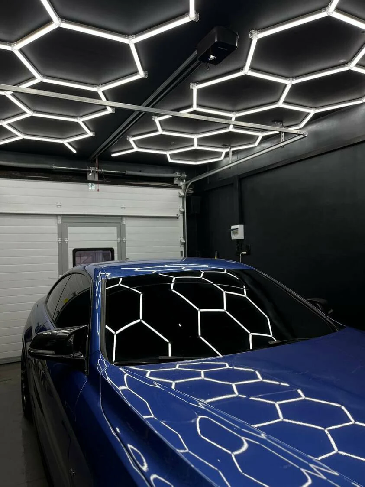
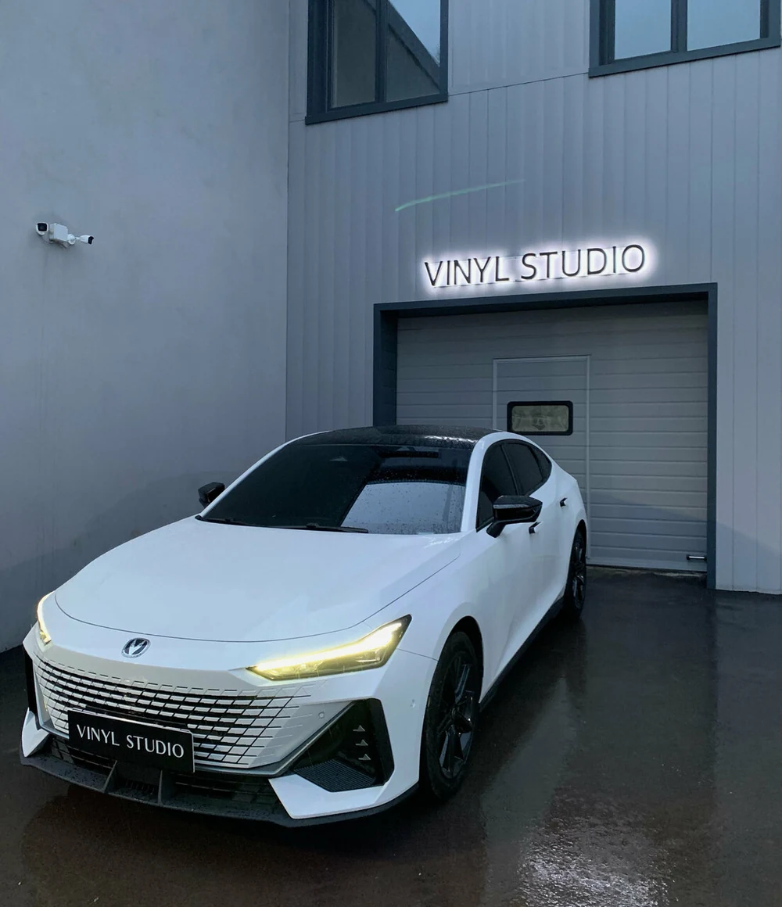
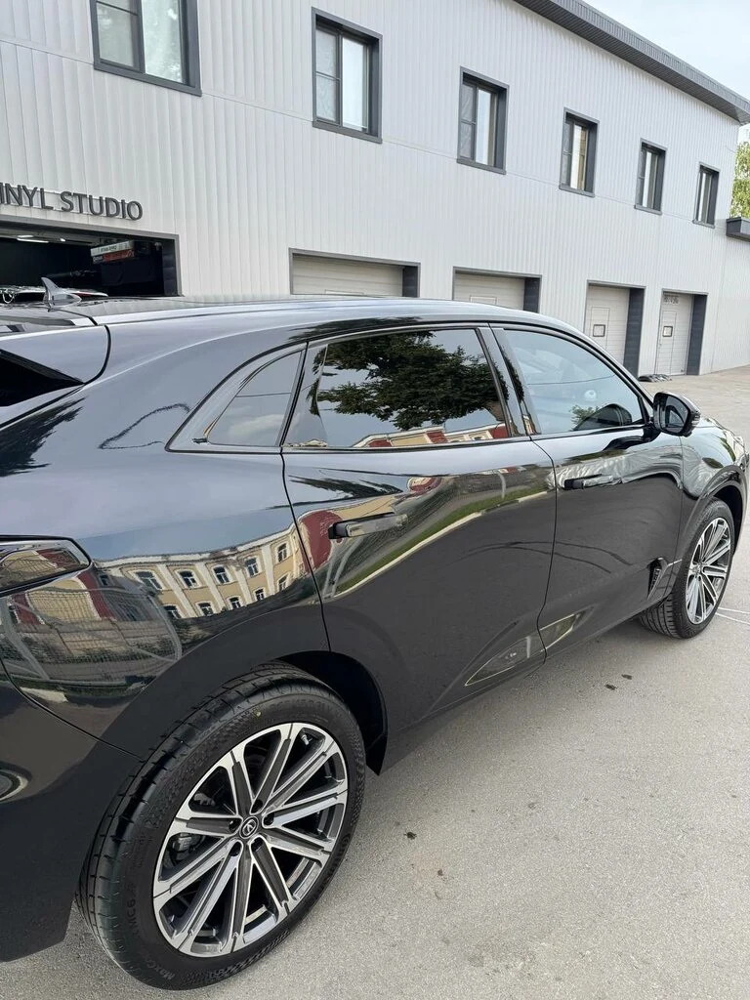
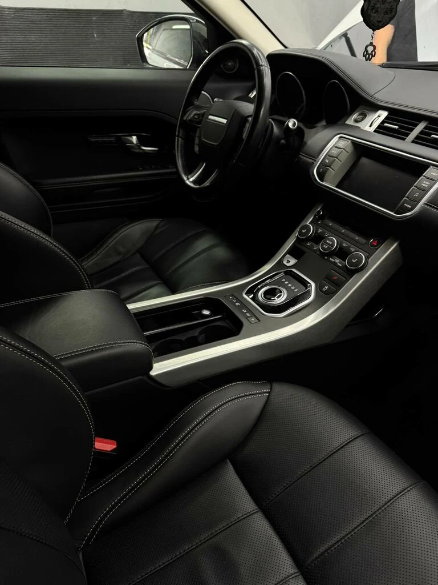
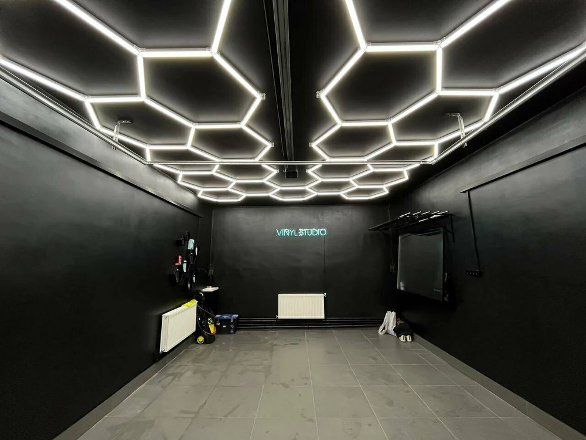

Оклейка и детейлинг в Туле
Защитить.
Преобразить.
Впечатлить.
У каждого автомобиля свой характер.
Поможем его подчеркнуть — плёнкой, тонировкой и вниманием к деталям.
01 / Услуги и цены
Ваш автомобиль.
Ваша задача.
Полный каталог студии: 17 услуг для кузова, стёкол и салона. Выберите направление, посмотрите цены и свяжитесь с мастером.

Vinyl Studio / ТулаСохранить то, что нравится
Невидимая защита.
Заметная разница.
Для тех, кто хочет сохранить внешний вид автомобиля и защитить самые уязвимые элементы кузова.
Нанесение защитных покрытий
Нанесение антидождя| Привокзальный
3 000 ₽
Керамика кузова| Привокзальный
15 000 ₽
Оклейка автомобиля
Оклейка автомобиля полиуретановой пленкой| Привокзальный
7 000 ₽
Бронирование автомобиля
Оклейка автомобиля защитной пленкой| Привокзальный
7 000 ₽
Стоимость зависит от автомобиля,
материала и объёма работ.

Vinyl Studio / ТулаПодчеркнуть характер
Новый образ.
Ваш почерк.
Цвет, фактура и акценты меняют восприятие автомобиля. От небольшой детали до нового образа.
Оклейка автомобиля
Оклейка автомобиля винилом| Привокзальный
5 000 ₽
Материал и итоговую стоимость
уточняйте у мастера.

Vinyl Studio / ТулаКомфорт каждый день
Меньше лишнего.
Больше своего.
Тонировка для выразительного внешнего вида и комфорта в салоне. Подберём решение под ваши пожелания.
Тонировка стекол
Тонировка фар
6 000 ₽
Тонировка заднего стекла
2 000 ₽
Тонировка боковых стекол
2 000 ₽
Тонировка лобового стекла| Привокзальный
3 000 ₽
Сообщите модель автомобиля —
уточним варианты и стоимость.

Vinyl Studio / ТулаВернуть удовольствие от авто
Свежесть внутри.
Блеск снаружи.
Уход за кузовом, стёклами и салоном. Чтобы автомобиль снова радовал и с первого взгляда, и за рулём.
Автомойка
Мойка двигателя
3 000 ₽
Детейлинг| Привокзальный
2 000 ₽
Полировка
Полировка фар
2 000 ₽
Полировка кузова
Абразивная (восстановительная) полировка кузова
10 000 ₽
Полировка лобового стекла
Полировка лобового стекла| Привокзальный
5 000 ₽
Предпродажная подготовка
Предпродажная подготовка| Привокзальный
10 000 ₽
Другое
Химчистка салона
10 000 ₽
Химчистка кузова| Привокзальный
2 000 ₽
Состав работ зависит
от состояния автомобиля.
Итоговую стоимость и объём работ уточняйте перед записью.
+7 906 532-55-95
02 / От идеи к результату
Большая разница.
В маленьких
деталях.
Красивый результат начинается с понятной задачи. Чтобы подобрать решение для вашего авто, начнём с трёх простых шагов.
- 01
Расскажите об автомобиле
Марка, модель и то, что хотите изменить. Фотографии помогут обсудить детали.
- 02
Обсудите варианты
Материалы, объём работ и бюджет — чтобы выбрать подходящее решение.
- 03
Согласуйте визит
Уточните итоговую стоимость, сроки и удобное время записи у мастера.
03 / Отзывы владельцев
Доверие —
в ваших словах.
«Тонировал здесь машину и остался очень доволен! Приятно, когда встречаешь таких профессионалов! Работу выполнили качественно, без задержек и на очень высоком уровне!»
«Огромное спасибо Ивану, выполнил работу по бронированию основных элементов передней части автомобиля и кузова! Мастер своего дела, отличный специалист, посоветовал что стоит бронировать, а что нет!»
«Быстро сделали тонировку и очень качественно, приехали поздно вечером, но мастер встретил, все объяснил и в положенный срок отдал готовый автомобиль»
04 / Просто свяжитесь с нами
Начнём
с разговора.
Обсудим ваш автомобиль, подберём услугу
и согласуем удобное время.
05 / Вопросы и ответы
До первого
знакомства.
Не нашли свой вопрос?
Задайте его напрямую мастеру.
От чего зависит стоимость?
От модели и состояния автомобиля, выбранного материала и объёма работ. Напишите, какая услуга нужна, и добавьте фотографии в мессенджере. Точную стоимость согласуйте с мастером до начала работ.
Чем винил отличается от защитной плёнки?
Винил обычно выбирают для изменения цвета и фактуры. Антигравийную плёнку — прежде всего для защиты лакокрасочного покрытия. Свойства зависят от конкретного материала: подходящий вариант лучше обсудить под вашу задачу.
Можно защитить только часть автомобиля?
Можно обсудить защиту отдельных элементов — например, капота, бампера или фар. Мастер подскажет, какие зоны актуальны для вашего автомобиля.
Сколько времени займут работы?
Срок зависит от услуги, состояния поверхностей и объёма подготовки. При записи уточните, когда можно привезти автомобиль и забрать его после работы.
Как записаться и найти студию?
Позвоните по номеру +7 906 532-55-95 или напишите в мессенджере. Адрес: Тула, микрорайон Мясново, Привокзальная улица, 15А. Часы работы и удобное время визита уточните при записи.
06 / Будем на связи
Увидимся
в студии.
+7 906 532-55-95Тула, Привокзальная улица, 15АМикрорайон Мясново
Предварительная запись. Рядом есть парковка.
Время визита уточните по телефону.